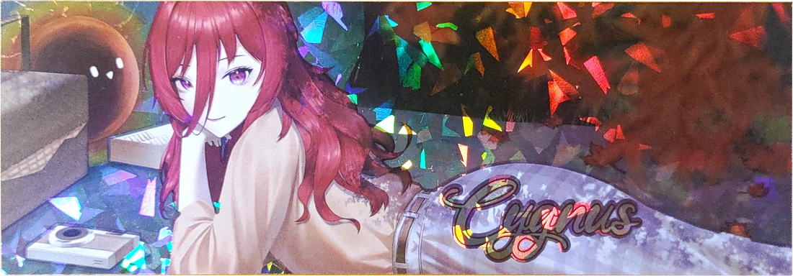
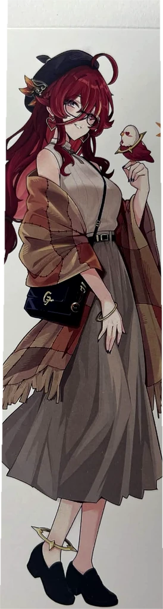
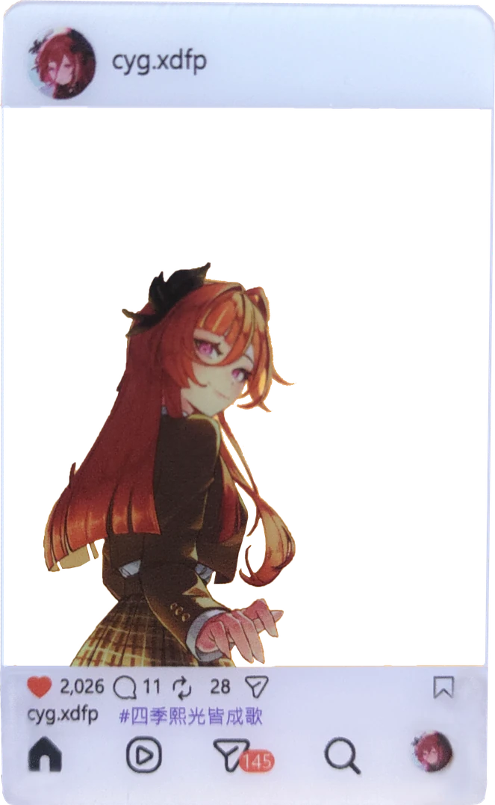
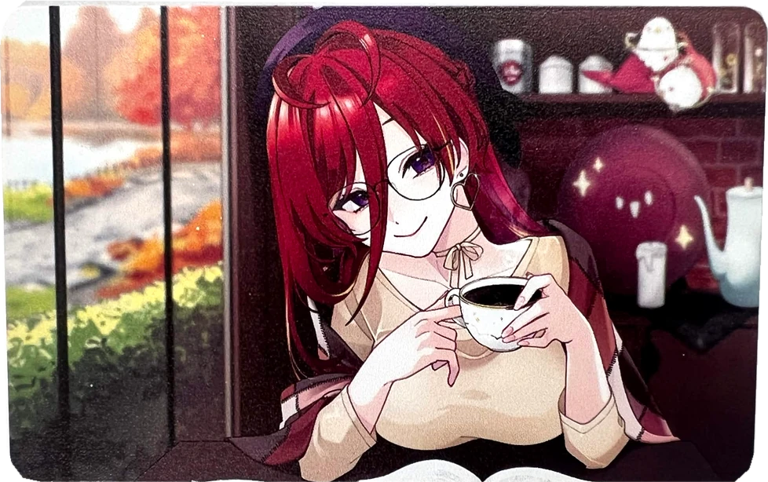
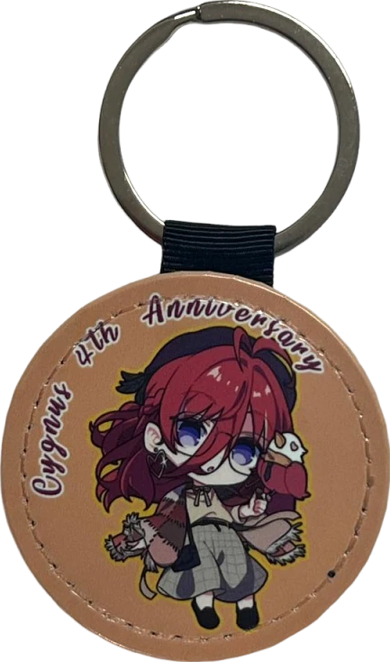
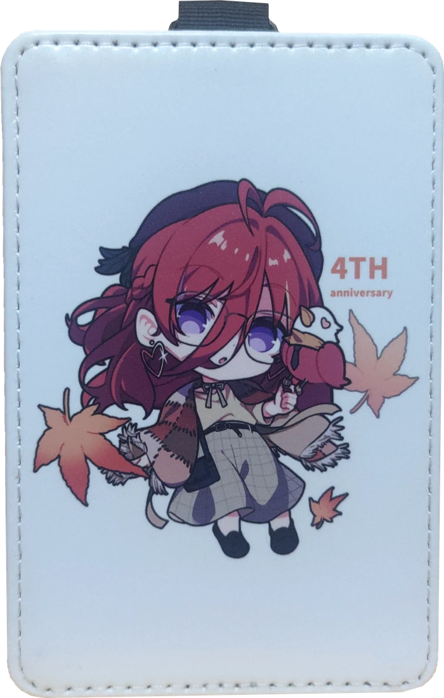
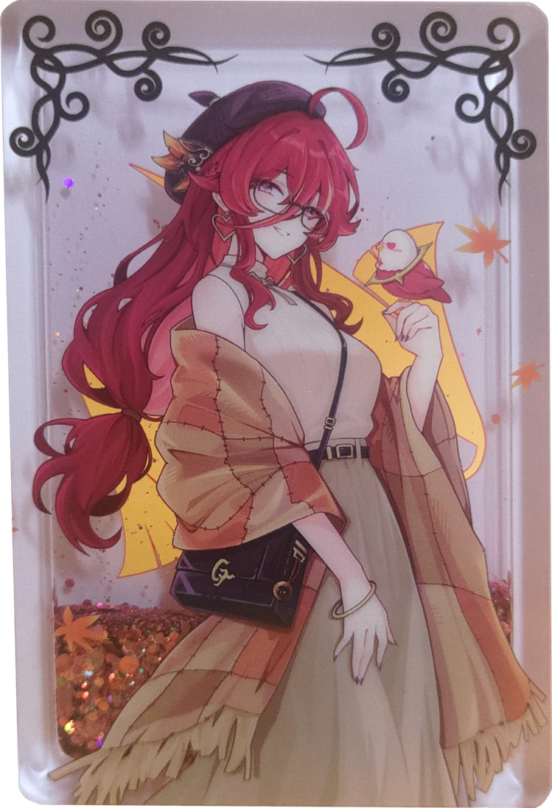

FOR CYGNUS · WITH LOVE把今天，
把今天，
貼在最喜歡的那頁。
四季走過，喜歡依然。
在一個有咖啡香的午後，
和同樣喜歡熙歌的你，
一起為這段四週年的旅程留下紀念。
Every season, a song.
現場周邊發放投影機播放過往場次周邊擺設

四季走過，喜歡依然。
在一個有咖啡香的午後，
和同樣喜歡熙歌的你，
一起為這段四週年的旅程留下紀念。
Every season, a song.
一點秋日，一點熙光。把這一天的喜歡，帶回身邊。
把秋天寄給妳
把午後的熙光，夾進收藏。

在光線裡，留住四週年的閃耀。

下一頁，還有妳。

讓風景也成為合照的一部分。
透明材質隨身帶著的喜歡

一份可以隨身帶走的紀念。

出門時，也有小小的陪伴。

每一次出發，都想起這一天。

把秋日與熙光，收進掌心。
無訂閱資格限制，依當日配量發放。
| 日期 | 數量 |
|---|---|
| 11/23–11/27 | 每日 25 份 |
| 11/28 | 當日 45 份 |
| 11/29 | 當日 30 份 |
向主辦方出示已訂閱熙歌 YouTube 頻道的畫面，即可從 6 種限定周邊中選擇 1 個領取。
| 日期 | 各款數量 | 配量範圍 |
|---|---|---|
| 11/27 | 6 種各 10 個 | 整日 |
| 11/28 | 6 種各 20 個 | 每個時段 |
| 11/29 | 6 種各 20 個 | 每個時段 |
以上為每一款的配量；領取方式為 6 選 1，並非一次領取 6 個。
當日餘量將併入隔日發放。一般周邊「無限制」指領取資格，仍有每日發放配量。
查看主辦方 X（Twitter）最新公告11/28、11/29 採號碼牌分組，依時段輪流入場。
| 組別 | 號碼牌 | 時段 |
|---|---|---|
| 第1組 | 1–20 號 | 13:00–14:00 |
| 第2組 | 21–40 號 | 14:00–15:00 |
| 第3組 | 41–60 號 | 15:00–16:00 |
| 第4組 | 61–80 號 | 16:00–17:00 |
| 第5組 | 81–100 號 | 17:00–18:00 |
| 組別 | 號碼牌 | 時段 |
|---|---|---|
| 第1組 | 1–20 號 | 13:00–14:00 |
| 第2組 | 21–40 號 | 14:00–15:00 |
| 第3組 | 41–60 號 | 15:00–16:20 |
11/29 最後一組時段為 15:00–16:20；16:00 起停止入場、僅出不進，16:30 活動正式結束。
每人低消為一杯飲品。
現場將發放周邊，使用投影機播放內容，並擺設過往熙歌場次的周邊。
一般周邊無訂閱資格限制；限定周邊於 11/27–11/29 發放，向主辦方出示已訂閱熙歌 YouTube 頻道的畫面，即可 6 選 1 領取 1 個。查看每日配量與完整領取方式。
謝謝每一份讓這場相遇成真的心意。
梓Azusa
下一個四季，
也想和你一起。
#四季熙光皆成歌